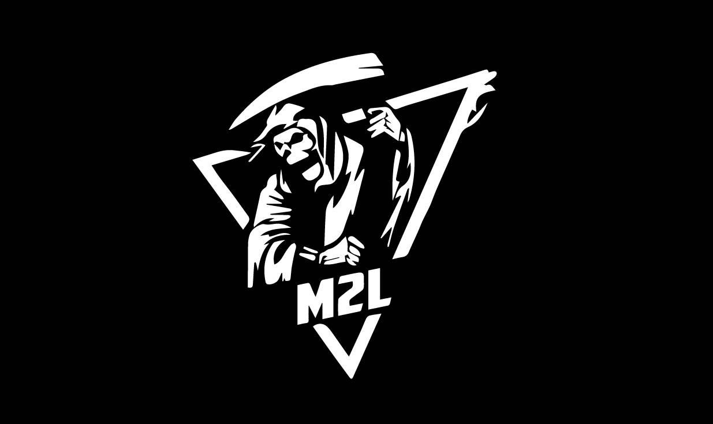
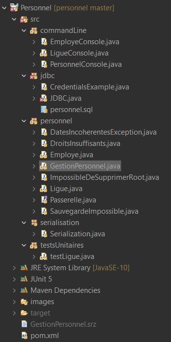
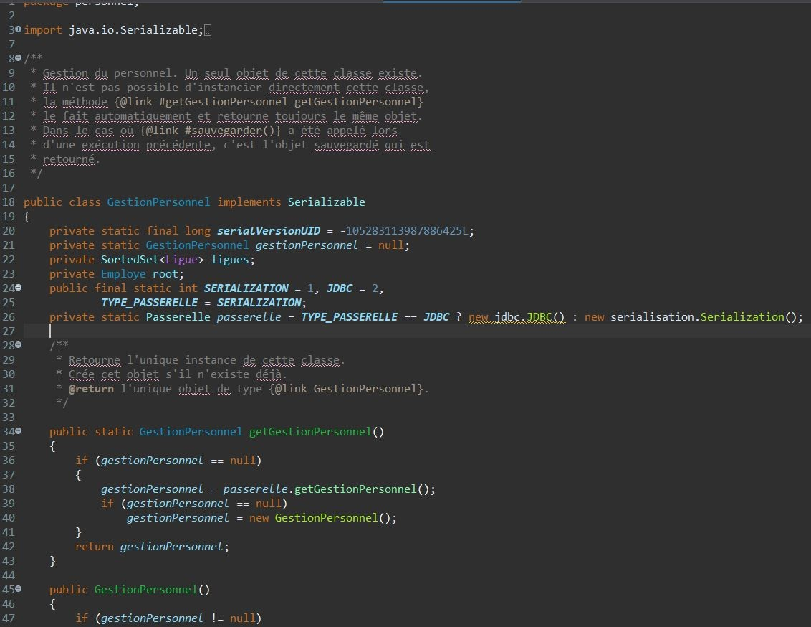
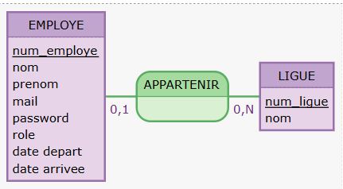

🎯 Contexte du projet
Ce projet a été réalisé dans le cadre de la gestion des employés de la Maison des Ligues de Lorraine (M2L). L'objectif était de transformer une application mono-utilisateur en ligne de commande en un système multi-utilisateurs avec différents niveaux d'habilitation.
📦 Ressources fournies
- Code source initial : Application Java configurée pour Eclipse avec architecture 3-tiers
- Documentation : Spécifications techniques et fonctionnelles
- Bibliothèque CLI : Outil de dialogue en ligne de commande
- Architecture existante : Structure 3-tiers à conserver (Présentation, Métier, Données)
✨ Réalisations et développements
1. Migration vers une base de données MySQL
Transformation de l'application mono-utilisateur en système multi-utilisateurs grâce à l'implémentation d'une base de données relationnelle. Cette migration a permis la gestion simultanée de plusieurs utilisateurs et la persistance des données.
2. Système d'authentification et d'habilitation
Mise en place de trois niveaux d'accès distincts :
- Employé simple : Accès en lecture seule (consultation de l'annuaire)
- Administrateur de ligue : Gestion des employés de sa propre ligue via application bureau
- Super-administrateur : Accès total + gestion des comptes administrateurs via CLI
3. Respect de l'architecture 3-tiers
Conservation et amélioration de l'architecture applicative existante en séparant clairement les couches Présentation, Métier et Accès aux données, garantissant ainsi la maintenabilité et l'évolutivité du système.
📸 Captures d'écran

Interface de connexion

Structuration du projet

Gestion des employés
🗄️ Modèle Conceptuel de Données (MCD)

Entités principales :
- EMPLOYE : Informations détaillées des employés , Niveaux d'habilitation (Employé, Admin, Super-admin)
- LIGUE : Organisation des ligues
🛠️ Technologies utilisées

Java
Langage principal pour la logique métier et l'architecture 3-tiers
MySQL
Base de données relationnelle pour la persistance multi-utilisateurs
🚀 Défis relevés
- Migration d'une architecture mono-utilisateur vers multi-utilisateurs
- Implémentation d'un système de permissions granulaire
- Respect strict de l'architecture 3-tiers existante
- Gestion de la sécurité et de l'authentification
- Compatibilité entre interface CLI et interface bureau